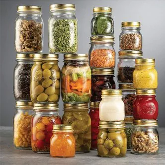

병조림 기술..
무려 220년전 쯤에 프랑스에서 발명됨
그때는 미생물이고 세균이고 지랄이고 모르던
시기인데 어떤놈이 걍 닥치고 밀봉하고
뜨신데 끓이면 거 안상한다 라는것을 발견함
이 개쩌는 기술로 당시 나폴레옹군대는
세계 최강이 됨
다른 나라 군인들은 돌같은 빵이나 처먹고
염장고기 먹을때 프랑스 군대는 저 사진속 음식같은
신선한 야채를 먹을수 있었음
괴혈병이 판을치고 죽어나가던 군대에
프랑스군은 개씹지리는 병조림 때문에 그런일이 적었음
몇년 후에 통조림 기술도 발견되었지만
웃긴건 2026년 아직까지 병조림 기술을 씀
당장 마트가면 쨈이나 피클, 스파게티 소스같은건
다 병조림임
피클같은 시그럽은 것은 통조림을 쓰면
산 성분때문에 캔부식이 쉬워져 조금 많이 좆같다고함
절임야채같은것은 현재까지 병조림을 능가하는
것이 안나왔다고 함
물론 레토르트 파우치 같은데 담아도 되는데
병조림은 안이 잘보임
즉 안의 내용물이 창렬당할 위험이 없어서
아직까지 절대적인 위치에 있음
저땐 유리병 비싼거 아니었음? 그걸 보급할정도로 단가가 맞았나